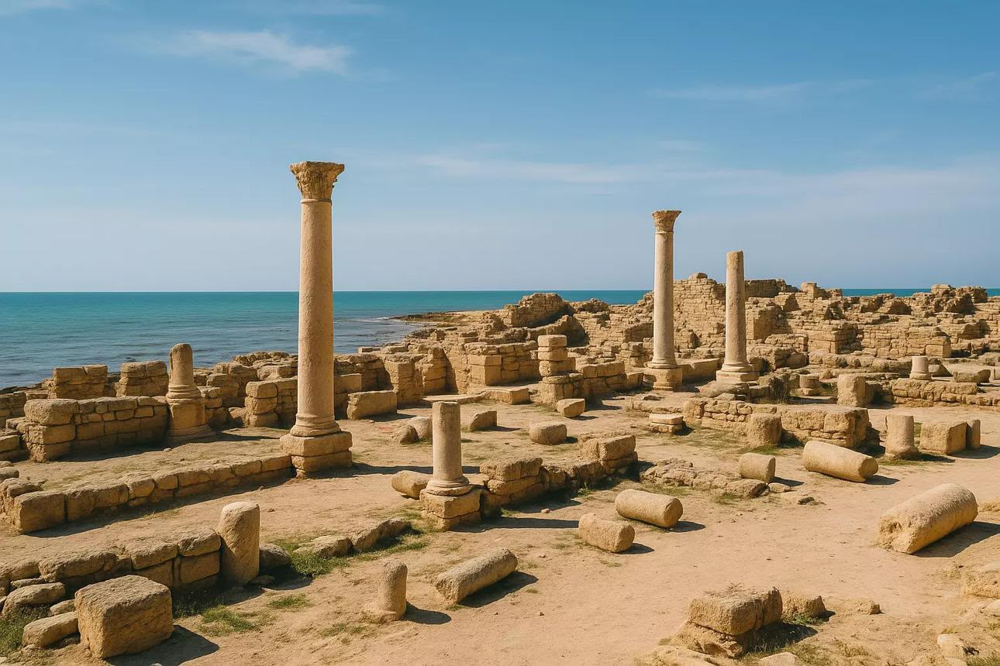

L'origine de djreba
Djerba possède une histoire très ancienne qui remonte à l'Antiquité. L'île a connu plusieurs civilisations, notamment les Phéniciens et les Romains. Parmi les sites historiques les plus importants, on trouve l'ancienne ville de Meninx, située près d'El Kantara. Elle était connue pour son commerce maritime et la production de la teinture pourpre. Ces vestiges témoignent de la richesse historique et culturelle de Djerba
ENTRE HISTOIRE ET CIVILISATION
Entre le IXe et le XVIIIe siècle, Djerba a développé un système d'occupation caractérisé par des établissements dispersés et une faible densité de peuplement. Cette organisation reposait notamment sur le système des menzel et des houma.
Les différents quartiers étaient reliés par un réseau de routes et entretenaient des relations avec les lieux de culte et les espaces commerciaux.
Des communautés et des traditions.
Le territoire djerbien a été marqué par la présence de communautés de cultures et de confessions différentes. Leur coexistence a contribué à façonner l'organisation sociale et spatiale de l'île.
Djerba inscrite au patrimoine mondial.
Le 18 septembre 2023, l'île de Djerba a été inscrite sur la Liste du patrimoine mondial de l'UNESCO sous le nom de « Djerba : témoignage d'un mode d'occupation d'un territoire insulaire ».
Ce classement comprend 31 composantes, réparties en :
* 7 sites : des espaces d'habitat traditionnel et des quartiers historiques.
* 24 monuments : des constructions historiques et architecturales.
Cette inscription reconnaît la valeur exceptionnelle du patrimoine matériel de Djerba et l'importance de sa protection pour les générations futures.